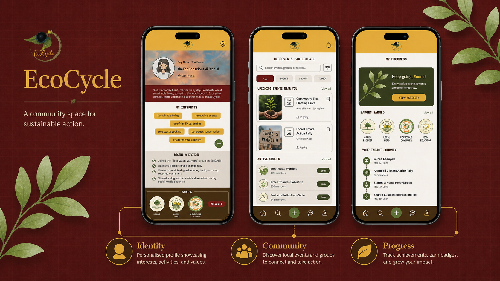
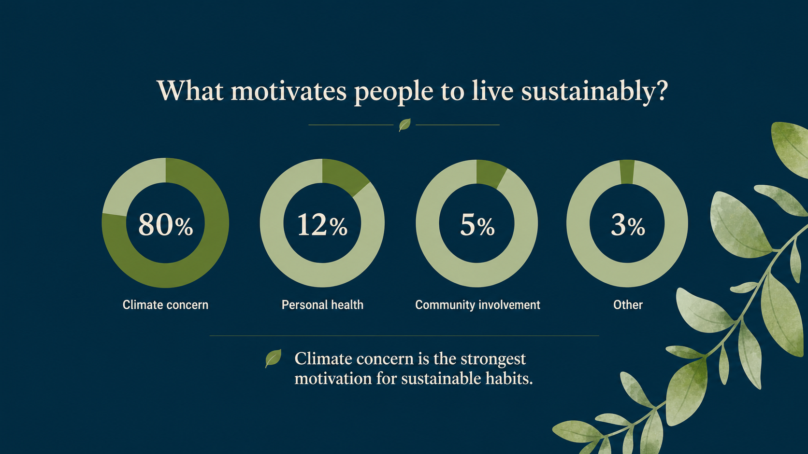
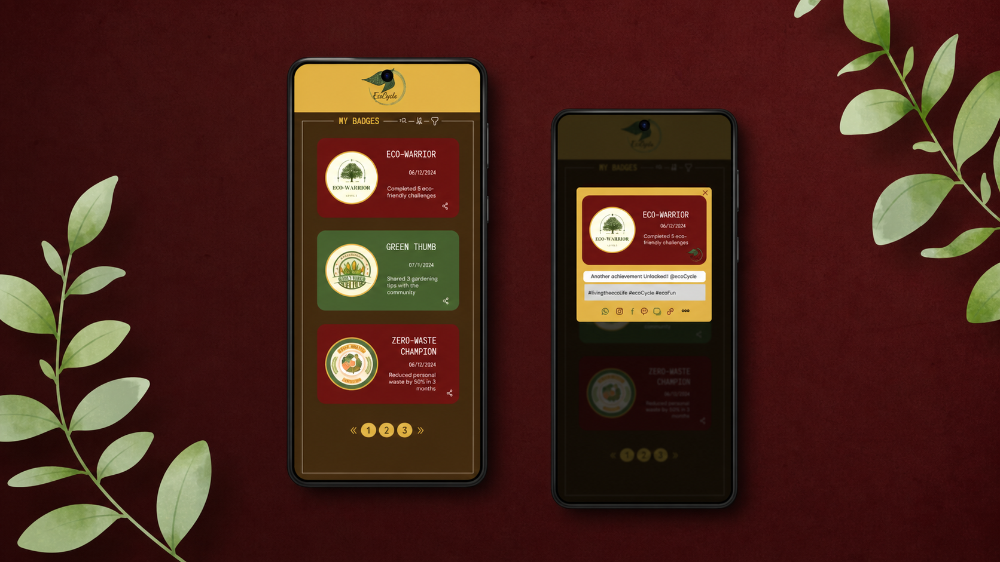
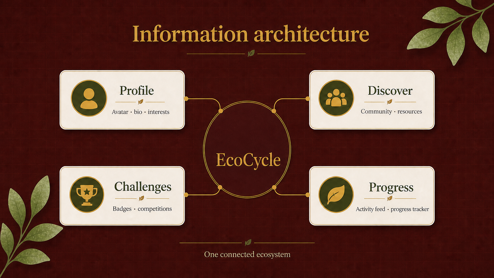
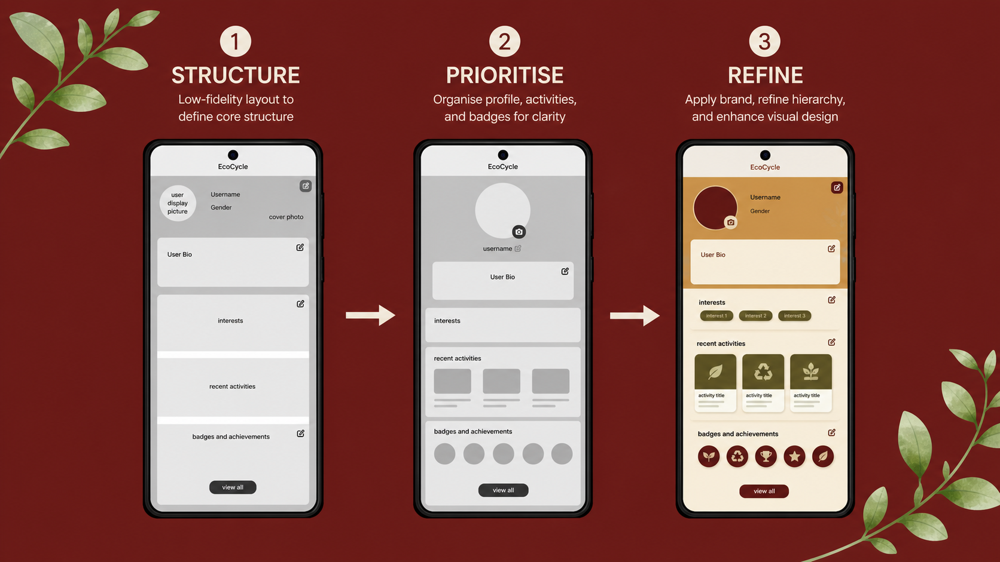
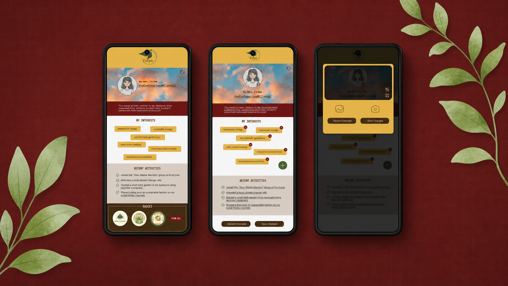

At a glanceA recommendation layer that helps loyalty members choose a reward instead of just browse for one.RoleProduct designerScopeRecommendation experience, controls, MVP, and measurementTakeawayDecision support can clarify the next best action without taking away choice.
At a glanceAn AI stylist that earns useful context without making wardrobe setup feel like work.RoleLead UX/UI designer and Android developerScopePersonalization, product design, and Android buildTakeawayProgressive input makes personal AI feel useful before it feels demanding.
At a glanceA community space that makes sustainable habits more visible and social.RoleResearch, UX, and UI leadScopeCommunity profile experienceTakeawayProgress feels more motivating when a community can see and share it.
At a glanceA calm Android companion for building a personal reading life.RoleProduct designer and Android builderScopeNative reading companionTakeawayPrivate, versioned storage keeps a reading record truly personal.
At a glanceA solo-travel planner designed to make exploration feel safer and lighter.RoleProduct designerScopeTwo-day design sprintTakeawaySafety should support a trip without taking over the experience.
At a glanceA luxury fashion world where celestial inspiration becomes a flexible, recognizable brand system.RoleBrand experience designerScopeStrategy, identity, and touchpointsTakeawayShared rules keep a brand recognizable across changing compositions and media.
Led five end-to-end brand and digital projects, from discovery through delivery.
Partnered with founders and developers to turn business goals into clear, conversion-focused experiences.
Key shiftStrategy → outcomes
1,000+ qualified leads
Skills picked up hereDiscovery · UX strategy · Delivery
May 2020 - Dec 2022
Brand Designer
Freelance | Chennai, India
Designed end-to-end experiences for 10+ consumer brands.
Built reusable systems and responsive interfaces with developers.
Key shiftVisuals → systems
10+ brands shaped
Skills picked up hereResearch · Design systems · Responsive UX
Jan 2019 - May 2020
Fashion Consultant
Scotch & Soda | Chennai, India
Created personalized styling and visual merchandising for premium retail experiences.
Built lasting customer relationships through thoughtful service and trend-led recommendations.
Key shiftStyling → behavior
3× Employee of the Month
Skills picked up hereStyling · Merchandising · Customer insight
Jan 2016 - May 2016
Quality Assurance Intern
JAK Industries | Chennai, India
Audited garments across stitching, finishing, and measurement with production teams.
Documented quality issues and partnered with sampling teams to improve production readiness.
Key shiftQuality detail → experience
Production quality foundation
Skills picked up hereQuality audits · Detail · Collaboration
Gallery
Visual Collection
Biography
About Me
Asha Rajendran — Product & Brand Designer
Thoughtful experiences, grounded in curiosity.
I’m a product and brand experience designer who creates thoughtful, inclusive experiences where clear structure meets curiosity.
Background — My path into design began in fashion, working as a stylist and quality assurance intern. There, I saw how design shapes how people feel—and how strong standards can make empowering experiences more accessible. As fashion became more intertwined with ecommerce, social media, and apps, that curiosity naturally led me into digital product design.
I turn complex problems into clear, useful experiences.
How I work — I combine research synthesis, visual design, and illustration to bring clarity to complex problems. I’m a careful listener who notices nuance, enjoys collaborative problem-solving, and helps teams navigate bottlenecks with fresh perspective.
What I’m building toward — I’m especially drawn to consumer and fashion SaaS products, where expressive brands and genuinely useful experiences can work hand in hand. I’m also expanding my practice through AI-assisted workflows, brand design, Procreate, surface design, and Kotlin development.
Outside of work — I’m usually reading YA fantasy, trying a new restaurant in search of something spicy, or making time to paint and write poetry. I also love stargazing and camping—anything that offers a little wonder, a good story, or a change of scenery.
Have an exciting project you want to collaborate on or a question about my design and brand experience services? Reach out directly via email or connect with me on social media. Let's build something exceptional.
Making AI styling personal without making setup exhausting
Making AI styling personal without making setup exhausting
Role: Lead UX/UI Designer & Android Developer Duration: 4 weeks Tools: Figma · Android Studio · Kotlin · Jetpack Compose Focus: AI personalization · Wardrobe digitization · Product design · Android development
The challenge
A useful AI stylist needs context. It needs to understand what someone owns, what they like, what suits them, where they are going, and even factors such as weather or mood.
But collecting all of that information creates a second problem:
The more an AI stylist knows, the better it can personalize. The more it asks upfront, the harder it becomes to start using.
I designed ishtyle around that tension. The goal was not simply to build a digital closet; it was to make getting dressed easier while keeping the effort required to create that closet low enough to feel worthwhile.
Finding the gap
I looked at products including Whering, Acloset, Cladwell, Indyx, and Alta. Each solved part of the problem well: closet organization, capsule wardrobes, human styling, or AI recommendations. But the experience was fragmented.
That suggested an opportunity to connect three things in one system: what I own → what works for me → what should I wear today?
From there, I focused the product around wardrobe digitization, contextual recommendations, personal style information, and optional human styling support.
The critical friction: building the digital wardrobe
Before ishtyle could recommend anything useful, users needed to digitize their clothes. That made wardrobe setup one of the highest-risk moments in the experience.
Instead of treating upload as a generic form, I designed a four-step flow: Capture → Remove background → Categorize → Confirm.
The goal was to reduce manual work and make each step feel immediately understandable. I later implemented the flow in Jetpack Compose, including the camera interaction, background-removal state, category handling, and visual feedback.
Designing personalization progressively
The onboarding flow combines style preferences, visual preference matching, color analysis, and wardrobe information. Rather than making personalization feel like a single long questionnaire, the experience breaks it into smaller interactions that progressively build the user's Style DNA.
Once inside the product, that context can support recommendations based on wardrobe, weather, calendar events, mood, and personal characteristics.
The principle was simple: Ask for information when its value to the user is clear.
From screens to system behavior
Building ishtyle as a functional Android prototype exposed decisions that were easy to overlook in static mockups. I had to think about:
how garments are represented as structured data
what happens after an item is captured
how categories remain consistent across the wardrobe
how UI states transition during digitization
how visual components behave in code
how wardrobe attributes could eventually inform recommendations
The design system paired editorial type with a calm, warm palette and lightweight components so the product could feel personal without adding visual noise to an already information-rich experience.
A garment becomes useful when its attributes are usable
Each captured item needed more than an image. I modeled the attributes that let the experience organize a wardrobe today and support context-aware recommendations later.
data classWardrobeItem(
val id: String,
val category: String,
val itemType: String,
val color: String = "Neutral",
val season: String = "All",
val occasion: String = "Casual",
val isFavorite: Boolean = false
)
Processing states need to feel active, not opaque
For background removal, I used a lightweight animated scan line to make an otherwise invisible processing state legible while keeping the user oriented in the flow.
That shifted my thinking from designing individual screens to designing a system of connected states and data.
Testing the highest-risk interaction
I tested the prototype with five participants, focusing particularly on wardrobe setup. The digitization flow averaged 38 seconds, beating my target of under 45 seconds. Style Quiz completion reached 90%, while initial category auto-detection achieved 92% accuracy during uploads.
These results are directional given the small sample, but they helped validate that the core setup experience could remain relatively lightweight despite the amount of information the system needs.
What I would test next
The next question is less about whether people can digitize their wardrobe and more about whether the resulting recommendations are actually useful. I would evaluate:
I would also test how much information can be deferred until after the first useful recommendation.
Takeaway
ishtyle taught me that designing an AI product is not primarily about putting AI into an interface. It is about designing the relationship between input, intelligence, explanation, and user control.
The better the system understands someone, the more useful it can become. The product challenge is earning that information without making personalization itself feel like work.
Smart Rewards
Helping loyalty members choose instead of just browse
Helping loyalty members choose instead of just browse
Loyalty programs are designed to make rewards feel valuable, but reaching redemption can create another decision.
A member opens a catalog and has to determine:
Which reward gives me the best value? Can I use it now? Should I spend my points or keep saving?
That creates friction at exactly the moment the loyalty program is supposed to feel rewarding. I focused Smart Rewards on this decision point.
Reframing the opportunity
One direction would have been to redesign the entire rewards experience. I chose a smaller intervention.
What if the platform could help a member identify one relevant reward without taking away their ability to choose?
My hypothesis was that an eligible, personalized, explainable recommendation could reduce the effort of comparing an entire catalog and create a clearer path toward redemption.
Designing decision support, not automated choice
The recommendation uses information the loyalty system may already have access to, including:
point balance and tier
reward eligibility
purchase and redemption history
reward availability
merchant restrictions and campaign priorities
The system first removes rewards the member cannot use, then ranks the remaining options for relevance. The interface surfaces one recommended reward, its value, why it was selected, and a direct redemption path.
But I deliberately kept access to the full catalog. The system makes a recommendation. The member still makes the decision.
Explainability became part of the UX
Personalization can create a trust problem if users cannot understand why something is being shown to them. Instead of displaying a mysterious “best reward,” the recommendation provides a simple explanation.
Recommended for you: $10 off your next purchase
You have enough points to redeem this reward today.
The explanation does not expose algorithmic complexity. It gives the member enough context to evaluate the recommendation themselves.
The other user: the marketer
The member experience is only half of a loyalty product. Merchants need control over which rewards exist, who qualifies, campaign timing, restrictions, inventory, and which rewards are eligible for recommendation.
I designed the marketer side around three actions: Configure → Preview & publish → Measure & optimize.
This keeps recommendation logic inside merchant-defined guardrails rather than allowing personalization to override business rules.
Scoping the MVP
There were many directions the concept could take, including bundles, goal-based recommendations, reminders, and increasingly sophisticated personalization. I deliberately excluded them from the first release.
The MVP focuses on:
eligibility filtering
relevance ranking
one explainable recommendation
basic merchant configuration
recommendation preview
performance measurement
The purpose of the first version is not to build the smartest possible recommendation engine. It is to answer a more fundamental question: Does better decision support actually change redemption behavior?
How I would validate it
Because this concept has not been launched, I separate proposed success measures from observed results. The primary metrics I would watch are:
reward redemption rate
recommendation-to-redemption conversion
completed loyalty purchases
Supporting metrics would include repeat purchase rate, average order value, reward cost, time to redemption, and member feedback on recommendation relevance.
I would validate the concept with a controlled test comparing the existing catalog experience with the recommendation experience. The goal would be to determine whether increased redemption also produces healthy business outcomes rather than simply increasing reward cost.
Modeling the business case
I also created an illustrative model to understand how a relatively small improvement in redemption could affect downstream purchase activity. Those numbers are planning assumptions, not observed results.
The purpose of the model was not to claim impact. It was to connect the design hypothesis to a measurable business outcome and establish what would need to be validated in a pilot.
Takeaway
Smart Rewards changed the way I thought about personalization. The goal is not always to give users more options or build a more sophisticated interface.
Sometimes the most useful product intervention is simply: help me understand the next best action, tell me why, and let me stay in control.
EcoCycle
Research showed me that another sustainability tracker wasn't enough

A social sustainability space designed around identity, participation, and shared progress.
Research showed me that another sustainability tracker wasn't enough
Sustainability products often focus on tracking individual behavior. Log an action. Measure progress. Repeat.
But before committing to that model, I wanted to understand what actually keeps people engaged with sustainable living. I interviewed 40 people about their motivations, habits, communities, and the resources they currently use.
The research changed the emphasis of the product.
What people were actually looking for

Research revealed that motivation already existed; people needed practical ways to participate, find resources, and make progress visible.
Climate concern was the strongest reported motivation, with 80% of participants identifying it as a primary driver. But motivation alone was not the problem.
60% already connected with other environmentally conscious people through online communities and forums, and participants repeatedly described looking for practical resources, discussions, events, and ways to share progress.
55% also considered profile customization important, with interest in showing goals and achievements. The pattern was becoming clear: people didn't only want to track sustainable behavior. They wanted to participate in it with other people.
The product shifted from tracking to identity and community
That insight changed the hierarchy of EcoCycle. Instead of making metrics the center of the experience, I focused the profile around three ideas:
Identity What do I care about and what am I working toward?
Progress What have I done and what have I achieved?
Community Where can I learn, participate, and share?
The profile became more than an account page. It became the connective layer between personal goals, community activity, resources, and recognition.
Designing recognition without turning sustainability into a competition

Achievements make participation visible while keeping the emphasis on personal milestones and shared discovery.
Achievements and badges could make progress visible, but they introduced another design question: How do you recognize sustainable action without reducing it to points and competition?
I treated achievements as markers of participation rather than a leaderboard. Users can showcase milestones, goals, and activities, while the broader experience emphasizes shared progress and discovery rather than ranking people against one another.
Simplifying the ecosystem

The information architecture gives users a clear route from sustainable intent to useful discovery, participation, and visible progress.
The research surfaced many possible features: discussions, events, resources, challenges, profiles, goals, achievements, content discovery, and social interactions. Putting everything at the same level would have created another fragmented platform.
I organized the experience around four connected areas: Profile → Discovery → Participation → Progress.
This gave users a clearer route from wanting to live more sustainably to finding something useful, taking action, and making that progress visible.
Iterating the profile

Successive profile layouts tested how identity, activity, and achievements should share the page hierarchy.
I explored multiple low-fidelity layouts before moving into the final interface. The central hierarchy question was: Should the profile lead with personal information, activity, or achievement?
The final direction balances personal identity with recent actions and earned badges, allowing the page to communicate both who the user is and what they are doing.
A reusable card and badge system, consistent spacing, accessible typography, and a nature-inspired visual language helped carry that structure through the product.
What I validated

The prototype was used to evaluate navigation clarity, goal setting, and the experience of sharing environmental achievements.
I evaluated navigation clarity, goal-setting flows, and the social-sharing experience for environmental achievements. Because the project did not produce production analytics, I would treat these tests as usability validation rather than evidence of long-term behavior change.
A live product would need to answer larger questions:
Do people return to the community?
Do resources lead to participation?
Does recognition increase continued engagement?
Are users discovering relevant local actions?
Does sharing progress motivate without creating performative behavior?
Takeaway
EcoCycle reinforced one of the most useful lessons from this project: Research should be allowed to change the product.
The opportunity was not simply to build a better sustainability tracker. It was to connect personal progress with the community, resources, and recognition people were already seeking.
Foundmoon
Designing a reading tracker that doesn't turn reading into another performance metric
Designing a reading tracker that doesn't turn reading into another performance metric
Public ratings, social feeds, streaks, detailed statistics, recommendations, and constant activity can turn a personal habit into another thing to manage.
Foundmoon started with a different question:
How can a reading tracker help someone return to a book without demanding more attention than reading itself?
Choosing what not to build
I deliberately positioned Foundmoon away from social-first book platforms and data-heavy trackers.
There is no public activity feed at the center of the experience.
Instead, I focused on a smaller set of needs:
What am I reading? What do I want to read? What did I think about it? Am I making the progress I wanted to make?
This made Foundmoon closer to a private reading journal than a social network.
Reading isn't linear
One of the most important product decisions was treating unfinished reading as normal behavior.
Books don't always move neatly from:
Want to Read → Currently Reading → Read
People pause books. Return months later. Read several at once. Decide not to finish something.
So Foundmoon supports:
Want to Read · Currently Reading · Read · DNF
DNF isn't treated as failure. It is simply another legitimate state in someone's reading history.
Progress without pressure
I still wanted the product to help readers maintain momentum, but without relying on aggressive streak mechanics.
That led to two constraints.
First, monthly goals are adjustable rather than imposed.
Second, the active shelf is intentionally limited to three Currently Reading titles.
When someone attempts to add a fourth, the app asks them to choose what should leave the active shelf rather than silently allowing it to become another backlog.
This turns a technical constraint into a product behavior:
help the reader focus without judging what they choose.
Designing reminders carefully
Notifications created a similar tension.
A reminder can help someone return to a habit.
It can also make leisure feel like an obligation.
Foundmoon therefore makes reminders configurable in both frequency and content, including a month-end prompt that helps readers decide what to do with unfinished books.
The goal is continuity, not engagement for its own sake.
Building changed the design
I implemented Foundmoon as a native Android product rather than stopping at a prototype.
That meant resolving product behavior for:
adding and editing books
moving between reading states
enforcing the active-reading limit
goals
appearance settings
notification permissions
data persistence
library import/export
merging imported records without overwriting the existing shelf
Reading history needs room for every outcome
The data model treats paused and unfinished books as valid parts of a reading life, rather than exceptional cases to hide or correct.
enum classReadingStatus {
WANT_TO_READ,
CURRENTLY_READING,
READ,
DNF
}
data classBook(
val id: String,
val title: String,
val status: ReadingStatus = ReadingStatus.WANT_TO_READ
)
The active-shelf limit asks for an intentional choice
Rather than silently adding a fourth active title, the app pauses the update and gives the reader a chance to choose which current book should leave the shelf.
These details pushed the work beyond screen design.
For example, library ownership became a UX decision as much as a technical one. Readers can export their data and import it later instead of having their reading history trapped inside the product.
Validation
Implementation testing focused on the core paths: adding and editing books, changing status, enforcing the three-book limit, preserving data across launches, importing a library, and handling Android notification permissions.
I have not presented formal participant usability metrics because that study has not yet been conducted.
That is the next step.
I would specifically test:
how quickly someone can add their first book
whether the reading states feel intuitive
whether the three-book constraint feels helpful or arbitrary
whether reminders support rather than pressure
whether users understand import/export
whether the product remains useful over several months of reading
Takeaway
Foundmoon became a study in continuity rather than maximum engagement.
Not every consumer product needs to demand more attention.
Sometimes good product design means helping someone do what they already care about, then getting out of the way.
YonderLust
Two days to design for the two things solo travelers need most: clarity and confidence
Two days to design for the two things solo travelers need most: clarity and confidence
A single app could include booking, transportation, maps, recommendations, itineraries, reviews, social features, budgeting, safety tools, and dozens of other capabilities.
I had two days.
So the challenge wasn't:
How much can I design?
It was:
What deserves to be designed first?
Finding the highest-value problems
Given the sprint timeline, I used secondary qualitative research rather than attempting a large primary study.
I reviewed solo-travel discussions, travel-blog comments, app reviews, and competing travel products.
Four themes appeared repeatedly:
planning across multiple tools creates cognitive load
safety affects decisions throughout a solo trip
travelers value independence but don't necessarily want isolation
feature-heavy travel products can make planning feel harder
I narrowed the sprint around the first two:
Planning + Safety
What I deliberately didn't solve
This was the most important prioritization decision.
YonderLust could have expanded into social matching, booking, budgeting, transportation management, AI trip generation, or a full travel marketplace.
I left those outside the core sprint.
Instead, I concentrated the prototype around:
Discover → Plan → Explore → Get help if needed
That gave the experience a coherent job instead of a long feature list.
Making safety visible without making travel feel dangerous
Safety presented an unusual design problem.
Hide emergency tools too deeply and they become useless when someone needs them.
Make them too prominent and the product constantly reminds users that something might go wrong.
I designed quick access to emergency contacts, location sharing, and SOS functionality while keeping the primary experience focused on exploration and planning.
Safety supports the journey.
It doesn't become the journey.
Bringing planning into one flow
The planning experience connects destination discovery with itinerary building and map-based exploration.
Instead of requiring users to mentally reconstruct a trip across multiple tools, the information architecture groups actions around user intent:
discover, plan, explore, safety.
Early wireframes helped me prioritize the home dashboard, visual itinerary, interactive map, and persistent safety access before investing time in visual polish.
What I validated, and what I didn't
Because this was a two-day sprint, I did not conduct formal participant usability testing.
I iterated through heuristic evaluation, research findings, and continuous design review.
That limitation matters.
The next version should test the assumptions I made under time pressure, particularly:
Can someone build an itinerary without guidance?
How quickly can they find SOS?
Do they understand what location sharing does?
Does persistent safety access feel reassuring or intrusive?
Can users move between discovery and planning without losing context?
Takeaway
YonderLust taught me that speed in product design isn't about producing more screens.
It's about making fewer, more defensible decisions.
Given two days, prioritizing the right problem mattered more than designing the largest product.
YonderLust
Two days to design for the two things solo travelers need most: clarity and confidence
1. Introduction
YonderLust is a conceptual mobile app that helps solo travelers discover destinations, plan itineraries, and explore confidently through a personalized, safety-focused experience. The project was completed as a two-day design sprint to explore how thoughtful product design can reduce travel anxiety while preserving the excitement of independent travel.
Solo travel offers freedom and self-discovery, but planning a trip alone can also feel overwhelming. Safety concerns, itinerary planning, and the uncertainty of exploring unfamiliar places often discourage people from traveling independently.
2. Overview
Role: Product Designer Duration: 2-Day Design Sprint Tools: Figma • FigJam • Illustrator Deliverables: User Research • User Flow • Wireframes • Design System • High-Fidelity Prototype
3. The Problem
Solo travelers face three recurring challenges:
Planning trips across multiple platforms
Feeling unsafe in unfamiliar destinations
Missing opportunities to connect with other travelers
Most travel apps prioritize bookings rather than the emotional needs of solo travelers, leaving users to manage planning, safety, and discovery on their own.
4. Project Goals
Simplify Itinerary Planning: Create a unified space to organize destinations, logistics, and daily tasks.
Build Confidence: Surface accessible, context-aware safety features without raising anxiety levels.
Calm & Intuitive UI: Present information simply, avoiding cognitive overload.
Immersive Exploration: Design an emotionally engaging product that celebrates independence.
5. Research
Although this was a two-day sprint, I grounded the design in qualitative research by reviewing travel communities and existing products. My research methods included: analysis of Reddit solo travel discussions, travel blog comments, App Store / Google Play reviews, and competitive analysis of existing travel applications. These sources helped identify common frustrations and unmet user needs.
6. Key Insights
Travelers want independence without feeling isolated: Many travelers valued solo experiences but wished they had opportunities to connect with like-minded people when desired.
Safety influences every stage of the journey: Users wanted reassurance before and during trips without intrusive safety features.
Planning is mentally exhausting: Managing destinations, accommodations, transportation, and activities across multiple apps created unnecessary cognitive load.
Simplicity builds confidence: Users preferred clean interfaces with clear navigation over feature-heavy travel applications.
7. Persona
Maya Patel, 29 • The Solo Explorer Goal: Plan safe, personalized solo trips without juggling multiple apps. Pain Points: Trip planning feels overwhelming; safety is a constant concern; information is scattered across different platforms. Needs: Personalized recommendations, simple itinerary planning, and built-in safety features. "I want to focus on enjoying my trip, not managing it."
8. User Journey Map
9. How Might We (HMW)
Key Design Opportunity: How might we simplify solo travel planning while helping users feel confident and safe throughout their journey?
10. Information Architecture
The sitemap was organized around discover, plan, explore, and safety. Grouping features by intent reduced navigation complexity and made frequently used actions easier to access.
11. User Flow
The primary flow follows a traveler from destination discovery through itinerary planning, exploration, and trip management while surfacing safety features at appropriate moments instead of interrupting the experience.
12. Wireframes
Early wireframes focused on layout, hierarchy, and navigation. I explored structures centered around a personalized home dashboard, interactive map exploration, a visual itinerary builder, and persistent access to safety features.
13. Design System
The visual language was intentionally calm and approachable to reinforce trust: soft teal palette to communicate safety and exploration, rounded components for a welcoming interface, clear typography, and consistent spacing targets.
14. Final UI
The final prototype combines itinerary planning, destination discovery, and safety features like emergency contacts, live location sharing, and quick-access SOS functionality into one cohesive mobile experience.
15. Prototype
The prototype demonstrates Maya's core travel planning experience from onboarding through itinerary creation and destination exploration.
16. Testing
Due to the project's two-day timeframe, formal usability testing wasn't conducted. Instead, I iterated on the interface using research insights, heuristic evaluation, and continuous design reviews throughout the sprint. Future iterations would include moderated usability testing to validate navigation and feature discoverability with solo travelers.
17. Reflection
This project reinforced that designing for travel extends beyond booking experiences. Solo travelers need products that reduce uncertainty while preserving the excitement of exploration. If I continued developing YonderLust, I would expand the product with AI-powered itinerary recommendations, community features for connecting with fellow travelers, and location-based safety insights to create a more personalized and supportive travel experience.
Luxury fashion is experienced as much through perception as product.
Typography, photography, packaging, editorial composition, materials, and even empty space contribute to whether a brand feels premium, distinctive, and coherent.
I created AURA around one question:
How can a celestial concept become a recognizable luxury brand without becoming visually literal or decorative?
Defining the world
AURA is positioned at the intersection of contemporary elegance and celestial fantasy.
I translated that positioning into five principles: Artistry · Emotion · Elegance · Authenticity · Imagination.
These became a filter for the visual system. Rather than filling every touchpoint with stars or obvious celestial motifs, I used atmosphere, contrast, typography, imagery, and composition to communicate the idea more subtly.
Building recognition through a system
The identity combines a custom wordmark with deep navy, warm gold, and soft neutrals. Typography balances expressive editorial character with practical readability.
But the goal wasn't to create a collection of attractive individual assets. It was to establish rules that could make different touchpoints feel unmistakably part of the same brand.
I built the system around:
a consistent typographic hierarchy
controlled color relationships
generous whitespace
full-bleed fashion imagery
grid-based editorial composition
integrated illustration and photography
This created enough consistency for recognition without making every layout identical.
Controlled variation
Luxury editorial design needs room for art direction. A rigid template would make every spread predictable; too little structure would make the identity inconsistent.
I designed the editorial system around controlled variation.
The grid, typography, spacing, and image behavior remain consistent while individual compositions can change according to the story being told. That principle allowed AURA to feel like a brand system rather than a single lookbook.
Extending the identity beyond editorial
For packaging, I used navy surfaces, gold detailing, patterned tissue, and message cards to make the unboxing experience part of the brand narrative.
For digital applications, I established direction for editorial web layouts, social content, iconography, and interface elements. For retail, I explored how lighting, layered textiles, and constellation-inspired displays could translate the same atmosphere into physical space.
Each application changes medium. The underlying brand language stays recognizable.
What I would develop next
AURA currently establishes the identity and its application across editorial, packaging, digital guidelines, and retail concepts. The next step would be to test the system in a fully interactive environment.
I would extend it into:
a responsive ecommerce experience
an interactive digital lookbook
collection landing pages
product-detail experiences
a component-based digital design system
That would test whether the visual identity can retain its expressive character while accommodating the functional demands of commerce.
Takeaway
AURA changed how I think about consistency. A strong brand system doesn't require every touchpoint to look identical. It creates enough shared structure that the brand remains recognizable even when the composition, medium, and context change.